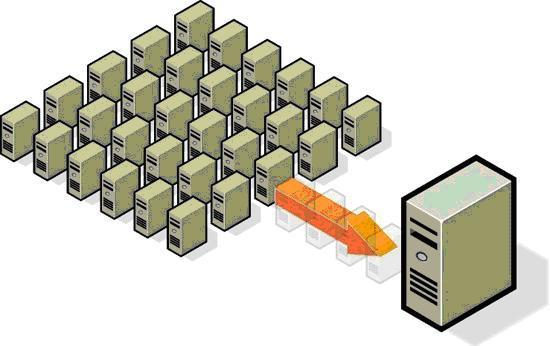

Согласно статистике средний уровень загрузки
процессорных мощностей у серверов под управлением Windows не превышает 10%, у
Unix-систем этот показатель лучше, но тем не менее в среднем не превышает 20%.
Низкая эффективность использования серверов объясняется широко применяемым с
начала 90-х годов подходом "одно приложение — один сервер", т. е.
каждый раз для развертывания нового приложения компания приобретает новый
сервер. Очевидно, что на практике это означает быстрое увеличение серверного
парка и как следствие — возрастание затрат на его администрирование,
энергопотребление и охлаждение, а также потребность в дополнительных помещениях
для установки всё новых серверов и приобретении лицензий на серверную ОС.
Виртуализация ресурсов физического сервера позволяет гибко распределять их между приложениями, каждое из которых при этом "видит" только предназначенные ему ресурсы и "считает", что ему выделен отдельный сервер, т. е. в данном случае реализуется подход "один сервер — несколько приложений", но без снижения производительности, доступности и безопасности серверных приложений. Кроме того, решения виртуализации дают возможность запускать в разделах разные ОС с помощью эмуляции их системных вызовов к аппаратным ресурсам сервера.

Рис. 34.1. Виртуализация подразумевает запуск на одном физическом
компьютере нескольких виртуальных компьютеров
В основе виртуализации лежит возможность одного
компьютера выполнять работу нескольких компьютеров благодаря распределению его
ресурсов по нескольким средам. С помощью виртуальных серверов и виртуальных
настольных компьютеров можно разместить несколько ОС и несколько приложений в
едином местоположении. Таким образом, физические и географические ограничения
перестают иметь какое-либо значение. Помимо энергосбережения и сокращения
расходов благодаря более эффективному использованию аппаратных ресурсов,
виртуальная инфраструктура обеспечивает высокий уровень доступности ресурсов,
более эффективную систему управления, повышенную безопасность и усовершенствованную
систему восстановления в критических ситуациях.
В широком смысле понятие виртуализации представляет
собой сокрытие настоящей реализации какого-либо процесса или объекта от
истинного его представления для того, кто им пользуется. Продуктом виртуализации
является нечто удобное для использования, на самом деле, имеющее более сложную
или совсем иную структуру, отличную от той, которая воспринимается при работе с
объектом. Иными словами, происходит отделение представления от реализации
чего-либо. Виртуализация призвана абстрагировать программное обеспечение от
аппаратной части.
В компьютерных технологиях под термином
"виртуализация" обычно понимается абстракция вычислительных ресурсов
и предоставление пользователю системы, которая "инкапсулирует"
(скрывает в себе) собственную реализацию. Проще говоря, пользователь работает с удобным для
себя представлением объекта, и для него не имеет значения, как объект устроен в
действительности.
Сейчас возможность запуска нескольких виртуальных
машин на одной физической вызывает большой интерес среди компьютерных
специалистов, не только потому, что это повышает гибкость ИТ-инфраструктуры, но
и потому, что виртуализация, на самом деле, позволяет экономить деньги.
История развития технологий виртуализации насчитывает
более сорока лет. Компания IBM была первой, кто задумался о создании
виртуальных сред для различных пользовательских задач, тогда еще в мэйнфреймах.
В 60-х годах прошлого века виртуализация представляла чисто научный интерес и
была оригинальным решением для изоляции компьютерных систем в рамках одного
физического компьютера. После появления персональных компьютеров интерес к
виртуализации несколько ослаб ввиду бурного развития операционных систем,
которые предъявляли адекватные требования к аппаратному обеспечению того
времени. Однако бурный рост аппаратных мощностей компьютеров в конце девяностых
годов прошлого века заставил ИТ-сообщество вновь вспомнить о технологиях
виртуализации программных платформ.
В 1999 г. компания VMware представила технологию
виртуализации систем на базе x86 в качестве эффективного средства, способного
преобразовать системы на базе x86 в единую аппаратную инфраструктуру общего
пользования и назначения, обеспечивающую полную изоляцию, мобильность и широкий
выбор ОС для прикладных сред. Компания VMware была одной из первых, кто сделал
серьезную ставку исключительно на виртуализацию. Как показало время, это
оказалось абсолютно оправданным. Сегодня WMware предлагает комплексную
виртуализационную платформу четвертого поколения VMware vSphere 4, которая
включает средства как для отдельного ПК, так и для центра обработки данных.
Ключевым компонентом этого программного комплекса является гипервизор VMware
ESX Server. Позднее в "битву" за место в этом модном направлении
развития информационных технологий включились такие компании как Parallels
(ранее SWsoft), Oracle (Sun Microsystems), Citrix Systems (XenSourse).
Корпорация Microsoft вышла на рынок средств
виртуализации в 2003 г. с приобретением компании Connectiх, выпустив свой
первый продукт Virtual PC для настольных ПК. С тех пор она последовательно
наращивала спектр предложений в этой области и на сегодня почти завершила
формирование виртуализационной платформы, в состав которой входят такие решения
как Windows 2008 Server R2 c компонентом Hyper-V, Microsoft Application
Virtualization (App-v), Microsoft Virtual Desktop Infrastructure (VDI), Remote
Desktop Services, System Center Virtual Machine Manager.
На сегодняшний день поставщики технологий
виртуализации предлагают надежные и легкоуправляемые платформы, а рынок этих
технологий переживает настоящий бум. По оценкам ведущих экспертов, сейчас
виртуализация входит в тройку наиболее перспективных компьютерных технологий.
Многие эксперты предсказывают, что к 2015 году около половины всех компьютерных
систем будут виртуальными.
Повышенный интерес к технологиям виртуализации в
настоящее время неслучаен. Вычислительная мощь нынешних процессоров быстро
растет, и вопрос даже не в том, на что эту мощь расходовать, а в том, что
современная "мода" на двухъядерные и многоядерные системы, проникшая
уже и в персональные компьютеры (ноутбуки и десктопы), как нельзя лучше
позволяет реализовать богатейший потенциал идей виртуализации операционных
систем и приложений, выводя удобство пользования компьютером на новый качественный
уровень. Технологии виртуализации становятся одним из ключевых компонентов (в
том числе, и маркетинговых) в самых новых и будущих процессорах Intel и AMD, в
операционных системах от Microsoft и ряда других компаний.
Преимущества виртуализации
Приведем основные достоинства технологий
виртуализации:
Виртуальной машиной будем называть программную или аппаратную среду,
которая скрывает настоящую реализацию какого-либо процесса или объекта от его
видимого представления.
Виртуальная машина — это полностью изолированный программный
контейнер, который работает с собственной ОС и приложениями, подобно
физическому компьютеру. Виртуальная машина действует так же, как физический
компьютер, и содержит собственные виртуальные (т.е. программные) ОЗУ, жесткий
диск и сетевой адаптер.
ОС не может различить виртуальную и физическую машины.
То же самое можно сказать о приложениях и других компьютерах в сети. Даже сама
виртуальная машина считает себя "настоящим" компьютером. Но несмотря
на это виртуальные машины состоят исключительно из программных компонентов и не
включают оборудование. Это дает им ряд уникальных преимуществ над физическим
оборудованием.
Рис. 34.2. Виртуальная машина
Рассмотрим основные особенности виртуальных машин
более детально:
Рассмотрим основные разновидности виртуализации, такие
как:
Сегодня, говоря о технологиях виртуализации, как правило, подразумевают виртуализацию серверов, так как последняя становится наиболее популярным решением на рынке IT. Виртуализация серверов подразумевает запуск на одном физическом сервере нескольких виртуальных серверов. Виртуальные машины или сервера представляют собой приложения, запущенные на хостовой операционной системе, которые эмулируют физические устройства сервера. На каждой виртуальной машине может быть установлена операционная система, на которую могут быть установлены приложения и службы. Типичные представители это продукты VmWare (ESX, Server, Workstation) и Microsoft (Hyper-V, Virtual Server, Virtual PC).
Рис. 34.3. Виртуализация серверов
Центры обработки данных используют большое
пространство и огромное количество энергии, особенно если прибавить к этому
сопровождающие их системы охлаждения и инфраструктуру. Средствами технологий
виртуализации выполняется консолидация серверов, расположенных на большом
количестве физических серверов в виде виртуальных машин на одном
высокопроизводительном сервере.
Число физических машин, необходимых для работы в
качестве серверов уменьшается, что снижает количество энергии, необходимой для
работы машин и пространство, требуемое для их размещения. Сокращение в
количестве серверов и пространстве уменьшает количество энергии, необходимой
для их охлаждения. При меньшем расходе энергии вырабатывается меньшее
количество углекислого газа. Данный показатель, например в Европе, имеет
достаточно важную роль.
Немаловажным фактором является финансовая сторона.
Виртуализация является важным моментом экономии. Виртуализация не только
уменьшает потребность в приобретении дополнительных физических серверов, но и
минимизирует требования к их размещению. Использование виртуального сервера
предоставляет преимущества по быстроте внедрения, использования и управления,
что позволяет уменьшить время ожидания развертывания какого-либо проекта.
Не так давно появились модели последнего поколения
процессоров в архитектуре x86 корпораций AMD и Intel, где производители впервые
добавили технологии аппаратной поддержки виртуализации. До этого виртуализация
поддерживалась программно, что естественно приводила к большим накладным
расходам производительности.
Для появившихся в восьмидесятых годах двадцатого века
персональных компьютерах проблема виртуализации аппаратных ресурсов, казалось
бы, не существовала по определению, поскольку каждый пользователь получал в
свое распоряжение весь компьютер со своей ОС. Но по мере повышения мощности ПК
и расширения сферы применения x86-систем ситуация быстро поменялась.
"Диалектическая спираль" развития сделала свой очередной виток, и на
рубеже веков начался очередной цикл усиления центростремительных сил по
концентрации вычислительных ресурсов. В начале нынешнего десятилетия на фоне
растущей заинтересованности предприятий в повышении эффективности своих
компьютерных средств стартовал новый этап развития технологий виртуализации,
который сейчас преимущественно связывается именно с использованием архитектуры
x86.
Отметим, что хотя в идеях x86-виртуализации в
теоретическом плане вроде бы ничего неизвестного ранее не было, речь шла о
качественно новом для ИТ-отрасли явлении по сравнению с ситуацией 20-летней
давности. Дело в том, что в аппаратно-программной архитектуре мэйнфреймов и
Unix-компьютеров вопросы виртуализации сразу решались на базовом уровне и
аппаратном уровне. Система же x86 строилась совсем не в расчете на работу в
режиме датацентров, и ее развитие в направлении виртуализации — это довольно
сложный эволюционный процесс со множеством разных вариантов решения задачи.
Важный момент заключается также в качественно разных
бизнес-моделях развития мэйнфреймов и x86. В первом случае речь идет фактически
о моновендорном программно-аппаратном комплексе для поддержки довольно
ограниченного круга прикладного ПО для достаточно узкого круга крупных
заказчиков. Во втором - мы имеем дело с децентрализованным сообществом
производителей техники, поставщиков базового ПО и огромной армией разработчиков
прикладного программного обеспечения.
Использование средств x86-виртуализации началось в
конце 90-х с рабочих станций: одновременно с увеличением числа версий
клиентских ОС постоянно росло и количество людей (разработчиков ПО,
специалистов по технической поддержке, экспертов), которым нужно было на одном
ПК иметь сразу несколько копий различных ОС.
Виртуализация для серверной инфраструктуры стала
применяться немного позднее, и связано это было, прежде всего, с решением задач
консолидации вычислительных ресурсов. Но тут сразу сформировалось два
независимых направления:
Следующий жизненный этап технологий x86-виртуализации
стартовал в 2004-2006 гг. и был связан с началом их массового применения в
корпоративных системах. Соответственно, если раньше разработчики в основном
занимались созданием технологий исполнения виртуальных сред, то теперь на
первый план стали выходить задачи управления этими решениями и их интеграции в
общую корпоративную ИТ-инфраструктуру. Одновременно обозначилось заметное
повышение спроса на виртуализацию со стороны персональных пользователей (но
если в 90-х это были разработчики и тестеры, то сейчас речь уже идет о конечных
пользователях как профессиональных, так и домашних).
Многие трудности и проблемы разработки технологий
виртуализации связаны с преодолением унаследованных особенностей программно-аппаратной
архитектуры x86. Для этого существует несколько базовых методов:
Полная виртуализация (Full, Native Virtualization). Используются не модифицированные экземпляры гостевых операционных систем, а для поддержки работы этих ОС служит общий слой эмуляции их исполнения поверх хостовой ОС, в роли которой выступает обычная операционная система. Такая технология применяется, в частности, в VMware Workstation, VMware Server (бывший GSX Server), Parallels Desktop, Parallels Server, MS Virtual PC, MS Virtual Server, Virtual Iron. К достоинствам данного подхода можно причислить относительную простоту реализации, универсальность и надежность решения; все функции управления берет на себя хост-ОС. Недостатки — высокие дополнительные накладные расходы на используемые аппаратные ресурсы, отсутствие учета особенностей гостевых ОС, меньшая, чем нужно, гибкость в использовании аппаратных средств.
Рис. 34.4. Полная виртуализация
Паравиртуализация (paravirtualization). Модификация ядра гостевой ОС
выполняется таким образом, что в нее включается новый набор API, через который
она может напрямую работать с аппаратурой, не конфликтуя с другими виртуальными
машинами. При этом нет необходимости задействовать полноценную ОС в качестве
хостового ПО, функции которого в данном случае исполняет специальная система,
получившая название гипервизора (hypervisor). Именно этот вариант является
сегодня наиболее актуальным направлением развития серверных технологий виртуализации
и применяется в VMware ESX Server, Xen (и решениях других поставщиков на базе
этой технологии), Microsoft Hyper-V. Достоинства данной технологии заключаются
в отсутствии потребности в хостовой ОС – ВМ, устанавливаются фактически на
"голое железо", а аппаратные ресурсы используются эффективно.
Недостатки — в сложности реализации подхода и необходимости создания
специализированной ОС-гипервизора.
Рис. 34.5. Паравиртуализация
Виртуализация на уровне ядра ОС (operating system-level
virtualization). Этот вариант подразумевает использование одного ядра хостовой
ОС для создания независимых параллельно работающих операционных сред. Для
гостевого ПО создается только собственное сетевое и аппаратное окружение. Такой
вариант используется в Virtuozzo (для Linux и Windows), OpenVZ (бесплатный
вариант Virtuozzo) и Solaris Containers. Достоинства — высокая эффективность
использования аппаратных ресурсов, низкие накладные технические расходы,
отличная управляемость, минимизация расходов на приобретение лицензий.
Недостатки — реализация только однородных вычислительных сред.
Рис. 34.6. Виртуализация на уровне ОС
Виртуализация приложений подразумевает применение модели сильной изоляции прикладных программ с управляемым взаимодействием с ОС, при которой виртуализируется каждый экземпляр приложений, все его основные компоненты: файлы (включая системные), реестр, шрифты, INI-файлы, COM-объекты, службы. Приложение исполняется без процедуры инсталляции в традиционном ее понимании и может запускаться прямо с внешних носителей (например, с флэш-карт или из сетевых папок). С точки зрения ИТ-отдела, такой подход имеет очевидные преимущества: ускорение развертывания настольных систем и возможность управления ими, сведение к минимуму не только конфликтов между приложениями, но и потребности в тестировании приложений на совместимость. Данная технология позволяет использовать на одном компьютере, а точнее в одной и той же операционной системе несколько несовместимых между собой приложений одновременно. Виртуализация приложений позволяет пользователям запускать одно и то же заранее сконфигурированное приложение или группу приложений с сервера. При этом приложения будут работать независимо друг от друга, не внося никаких изменений в операционную систему. Фактически именно такой вариант виртуализации используется в Sun Java Virtual Machine, Microsoft Application Virtualization (ранее называлось Softgrid), Thinstall (в начале 2008 г. вошла в состав VMware), Symantec/Altiris.
Рис. 34.7. Виртуализация приложений
Виртуализация представлений (рабочих мест) Виртуализация представлений подразумевает эмуляцию интерфейса пользователя. Т.е. пользователь видит приложение и работает с ним на своём терминале, хотя на самом деле приложение выполняется на удалённом сервере, а пользователю передаётся лишь картинка удалённого приложения. В зависимости от режима работы пользователь может видеть удалённый рабочий стол и запущенное на нём приложение, либо только само окно приложения.
Рис. 34.8. Виртуализация представлений
Потребности бизнеса меняют наши представления об
организации рабочего процесса. Персональный компьютер, ставший за последние
десятилетия неотъемлемым атрибутом офиса и средством выполнения большинства
офисных задач, перестает успевать за растущими потребностями бизнеса. Реальным
инструментом пользователя оказывается программное обеспечение, которое лишь
привязано к ПК, делая его промежуточным звеном корпоративной информационной
системы. В результате активное развитие получают "облачные"
вычисления, когда пользователи имеют доступ к собственным данным, но не
управляют и не задумываются об инфраструктуре, операционной системе и
собственно программном обеспечении, с которым они работают.
Вместе с тем, с ростом масштабов организаций,
использование в ИТ-инфраструктуре пользовательских ПК вызывает ряд сложностей:
Уйти от этих сложностей и сократить издержки,
связанные с их решением, возможно благодаря применению технологии виртуализации
рабочих мест сотрудников на базе инфраструктуры виртуальных ПК – Virtual
Desktop Infrastructure (VDI). VDI позволяет отделить пользовательское ПО от
аппаратной части – персонального компьютера, - и осуществлять доступ к
клиентским приложениям через терминальные устройства.
VDI - комбинация соединений с удаленным рабочим столом
и виртуализации. На обслуживающих серверах работает множество виртуальных
машин, с такими клиентскими операционными системами, как Windows 7, Windows
Vista и Windows XP или Linux операционными системами. Пользователи дистанционно
подключаются к виртуальной машине своей настольной среды. На локальных
компьютерах пользователей в качестве удаленного настольного клиента могут
применяться терминальные клиенты, старое оборудование с Microsoft Windows
Fundamentals или дистрибутив Linux.
VDI полностью изолирует виртуальную среду
пользователей от других виртуальных сред, так как каждый пользователь
подключается к отдельной виртуальной машине. Иногда используется статическая
инфраструктура VDI, в которой пользователь всегда подключается к той же
виртуальной машине, в других случаях динамическая VDI, в которой пользователи
динамически подключаются к различным виртуальным машинам, и виртуальные машины
создаются по мере необходимости. При использовании любой модели важно хранить
данные пользователей вне виртуальных машин и быстро предоставлять приложения.
Наряду с централизованным управлением и простым
предоставлением компьютеров, VDI обеспечивает доступ к настольной среде из
любого места, если пользователи могут дистанционно подключиться к серверу.
Представим, что на клиентском компьютере возникла
неполадка. Придется выполнить диагностику и, возможно, переустановить
операционную систему. Благодаря VDI в случае неполадок можно просто удалить
виртуальную машину и за несколько секунд создать новую среду, с помощью
созданного заранее шаблона виртуальной машины. VDI обеспечивает дополнительную
безопасность, так как данные не хранятся локально на настольном компьютере или
ноутбуке.
Как пример виртуализации представлений можно
рассматривать и технологию тонких терминалов, которые фактически виртуализируют
рабочие места пользователей настольных систем: пользователь не привязан к
какому-то конкретному ПК, а может получить доступ к своим файлам и приложениям,
которые располагаются на сервере, с любого удаленного терминала после
выполнения процедуры авторизации. Все команды пользователя и изображение сеанса
на мониторе эмулируются с помощью ПО управления тонкими клиентами. Применение
этой технологии позволяет централизовать обслуживание клиентских рабочих мест и
резко сократить расходы на их поддержку — например, для перехода на следующую
версию клиентского приложения новое ПО нужно инсталлировать только один раз на
сервере.
Рис. 34.9. Пример тонкого клиента. Терминал Sun Ray.
Одним из наиболее известных тонких клиентов является
терминал Sun Ray, для организации работы которого используется программное
обеспечение Sun Ray Server Software. Для начала сеанса Sun Ray достаточно лишь
вставить в это устройство идентификационную смарт-карту. Применение смарт-карты
существенно повышает мобильность пользователя — он может переходить с одного
Sun Ray на другой, переставляя между ними свою карточку и сразу продолжать
работу со своими приложениями с того места, где он остановился на предыдущем
терминале. А отказ от жесткого диска не только обеспечивает мобильность
пользователей и повышает безопасность данных, но и существенно снижает
энергопотребление по сравнению с обычными ПК, поэтому терминал Sun не имеет
вентилятора и работает практически бесшумно. Кроме того, сокращение числа
компонентов тонкого терминала уменьшает и риск выхода его из строя, а
следовательно, экономит расходы на его обслуживание. Еще одно преимущество Sun
Ray — это существенно расширенный по сравнению с обычными ПК жизненный цикл
продукта, поскольку в нём нет компонентов, которые могут морально устареть.